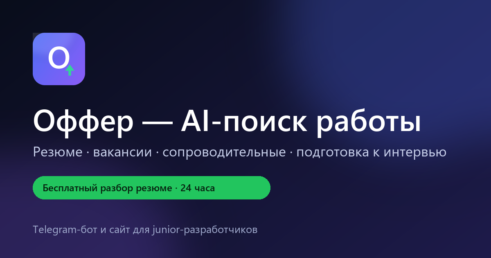

Оффер ближе,
чем кажется
Разбираю резюме, нахожу вакансии под твою профессию — IT и другие — и готовлю письма так, чтобы отвечали. За 24–48 часов, а не за месяц пустых откликов.
Подбор идёт по живым вакансиям
При каждом заказе система в реальном времени собирает вакансии с rabota.by/hh.ru и международных площадок, фильтрует по вашей роли и опыту — и оставляет только подходящие. Никаких «советов из воздуха».
rabota.by / hh.ru
Беларусь и удалёнка · живой RSS
Jobicy / Himalayas
международный remote · live API
Фильтр по роли
20/40/60 вакансий по тарифу
ИИ-отбор
релевантность и причины выбора
Специалисту не хватает не знаний, а системы
Рынок не отвечает не потому, что ты плохой разработчик. Ты просто делаешь 50 одинаковых откликов вручную.
50 откликов — 0 ответов
Одно резюме летит во все вакансии, HR видит шаблон и проходит мимо.
Вакансии тонут в мусоре
Площадки, чаты, каналы: вручную не переварить. Половина — не твой уровень или офис в другом городе.
Подготовка съедает недели
Резюме, письма, вопросы HR, тестовые — это можно систематизировать и делать в 5 раз быстрее.
Ты присылаешь резюме — получаешь готовый пакет
Без курсов, мотивационных речей и «просто попробуй ещё 100 откликов».
Разбор профиля
Смотрю стек, проекты, опыт и цель. Честно показываю, где ты проигрываешь конкуренту.
Подбор вакансий
Прогоняю рынок и отбираю 20–30 вакансий под твой уровень — с причинами, почему подходит.
Резюме и письма
2 версии резюме + 3 персональных сопроводительных. Ключевые слова для ATS и человеческий язык.
Подготовка к HR
10 вопросов с твоими ответами, разбор «расскажи о себе», стратегия по зарплате и follow-up.
Так выглядит отчёт, который получает клиент
Оценка профиля, сильные и слабые места, 10 правок резюме, ключевые слова для ATS, 12 вакансий со ссылками, готовое письмо, 8 вопросов к интервью и план на 7 дней.

Начни бесплатно, плати за результат
Оплата — картой, через ЕРИП или Telegram Stars. Цены в BYN и в звёздах (для оплаты прямо в Telegram).
- 10 правок резюме
- 5 живых вакансий
- 1 переписанное письмо
- Срок: 24 часа
- 20 живых вакансий
- 2 версии резюме
- 3 сопроводительных
- Шаблоны ответов HR
- Срок: 2 дня
- Всё из «Базового»
- 40 живых вакансий
- 30 откликов под тебя
- Follow-up по откликам
- Подготовка к интервью
- Срок: 3–4 дня
- Всё из «Про»
- 2 недели сопровождения
- Мок-интервью
- Разбор тестового
- 60 живых вакансий
- Помощь с оффером
Гарантирую работу и сроки, а не «оффер за 2 недели». Если качество не устроит — верну деньги за пакет.
Три способа — как удобно
Оплата принимается в Беларуси, без посредников и скрытых комиссий.
Карта МТБ / Беларусбанк. После оплаты присылаешь скриншот в бот — пришлю чек самозанятого из «Профдохода».
Оплата через «Систему расчётов» в приложении банка: перевод по номеру или код услуги. Чек — в «Профдоходе».
Оплата звёздами прямо в боте — в 2 клика, без ввода реквизитов. Приходит чек и подтверждение оплаты.
🔒 Сумма фиксированная: ровно столько, сколько указано в заказе — без обмена и доплат. Мы никогда не просим коды из СМС, данные карты или пароли: только перевод на карту/ЕРИП или оплата Stars внутри Telegram.
Выбери пакет в боте
Пришли резюме и роль — бот подготовит заказ и покажет точную сумму.
Скопируй реквизиты
Нажми на номер карты или ЕРИП-счёт в боте — он скопируется. Переведи ровно указанную сумму одним платежом.
Пришли скриншот
Подтверждение — в течение дня, отчёт придёт в бот. Telegram Stars — автоматически за 1–3 минуты.
Получи отчёт и чек
После подтверждения приходит HTML-отчёт и чек самозанятого из приложения «Профдоход».
Кто за этим стоит
Ярослав Кирдун — Python/AI-разработчик из Минска. Учусь на 3 курсе, пишу на Python: FastAPI, aiogram, парсинг, LLM API. Автор проекта Job_Search_AI — системы, которая находит вакансии, считает релевантность и генерирует документы. С ней я за пару часов получил 3 тестовых в IT-компаниях.
Частые вопросы
Это не просто ChatGPT?
ChatGPT — инструмент. Я использую его вместе с собственной системой: база вакансий, скоринг, шаблоны документов и проверка результата. Ты платишь за готовый результат, а не за промпт.
Гарантируете трудоустройство?
Нет, и никто честно не может этого гарантировать. Гарантирую объём работы и сроки: 20–60 живых вакансий (по тарифу), 2 версии резюме, 3 письма, подготовка к HR. Если качество не устроит — верну деньги за пакет.
Сколько времени занимает?
Аудит — 24 часа. Базовый пакет — 2 дня. Про — 3–4 дня. VIP — 2 недели сопровождения.
Как оплатить?
Перевод на карту МТБ/Беларусбанк, через ЕРИП или Telegram Stars прямо в боте. Я работаю как самозанятый (НПД): по каждой оплате выдаю чек в приложении «Профдоход».
Я не из Беларуси — работаем?
Да, удалённо. Я в Минске (UTC+3), подстраиваюсь под твой часовой пояс по созвонам.
А если у меня нет опыта и проектов?
Тогда сначала помогу упаковать учебные проекты и GitHub так, чтобы это выглядело как опыт. Это входит в разбор профиля.
Где посмотреть статус заказа?
В боте команда /my — список заказов и статусы. После оплаты Telegram Stars статус обновляется автоматически.
Это только для IT?
Нет. Разбор резюме, сопроводительные, вопросы и план — для любой профессии. Для IT-ролей есть готовая база вакансий; для других профессий — ссылки для поиска и стратегия.
Можно посмотреть отчёт до покупки?
Да — пример отчёта. А бесплатный разбор резюме вообще без оплаты.
Первый шаг — бесплатный
Пришли резюме в Telegram. За 24 часа верну 10 правок, 5 живых вакансий и одно письмо. Дальше решишь сам.
Открыть бота @OfferCareerBotСайт принимает заявки круглосуточно, даже если бот недоступен. Если бот не отвечает — оставь заявку на странице оформления или напиши на erder101@gmail.com.